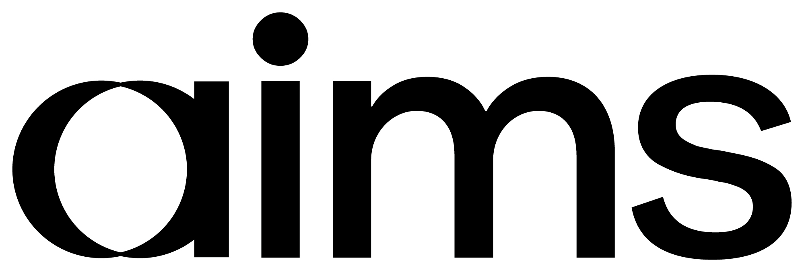

Eight tools. Copy a prompt, paste your own details in where you see [brackets], send it. Run them in one Project and the last one turns everything into a finished deck.
Words in [brackets] are yours to change. Leave the rest.
Step 4 below, run for real ahead of a first call with AIMS Netherlands — proof the prompts hold up even when the honest answer isn't a clean sector match.
AIMS Netherlands: Eindhoven-based since 2000, ~8 people, also covering Belgium. Managing Director Rolf Heeb; Associated Partners Hans Oomes (Breda) and Tom Verhoeven (Eindhoven). Published sector focus: finance, logistics & e-commerce, industrial, IT & engineering, pharma & life sciences, retail.
Honest finding: no published overlap with beverage alcohol. A pitch built on sector match alone would be weak here — the case has to be built differently.
Sources: aimsinternational.com/company/aims-netherlands · rocketreach.co partner profiles
Sources: AbbVie Ireland NL B.V. corporate filings · ICON plc company profile. Beverage-alcohol trade evidence withheld — sector-sensitive. Rolf Heeb's background is not independently verified here — confirm directly.
The rules aren't a prompt — they're fixed. This checks a real situation against them.
Here are AIMS's Cross-Border Business (CBB) rules: - CBB applies when two or more AIMS partners make a documented, commercially relevant contribution to winning, managing or delivering a client assignment. - The originating partner owns the client relationship. - In principle the receiving partner leads and delivers the assignment, unless the client specifically expects the provider to stay responsible. - The fee split is set by AIMS's bylaws; the origin partner's fee is reported by the provider entity for network statistics. - The provider normally invoices the client, unless the client needs to be invoiced by the receiving entity for tax or accounting reasons. - If the originating partner doesn't already know their counterpart, they notify that country's Managing Partner, who assigns a receiver. - The provider's quality standards apply, since they usually know the client best. My situation: [describe the client, which offices are involved, and who is doing what] Using the rules above: does this qualify as CBB? Who owns the client relationship, who should lead delivery, and what's the likely fee split? Flag anything the rules don't clearly cover.
Turns the same rules into a one-page reference for anyone who hasn't read the policy.
Summarise the following into a single internal one-pager for consultants in [your office, e.g. AIMS Netherlands]: what CBB is, when it applies, how to log it in Ezekia, and who to contact if unsure. Plain English, one page, no jargon. Source material: [paste the CBB rules from Step 1, plus anything else you have — the Ezekia CBB playbook, local notes, etc.]
Scores one named client, band A/B/C. Log the result in Ezekia as a note on that account.
Score this account against AIMS's CBB opportunity checklist. Client: [client name] Consultant: [your name] Countries involved: [e.g. Ireland, Netherlands] Checklist — mark each yes/no with a one-line reason: 1. International Client Footprint - Does the client operate subsidiaries, production sites or sales offices in other countries? - Is the client planning international expansion, acquisitions or new market entry? - Are international operations managed centrally or locally? - Do we have access to decision-makers at headquarters or in international subsidiaries? 2. International Leadership & Recruitment Needs - Are management or specialist positions currently vacant in other countries? - Are new international leadership positions expected within the next 12–24 months? - Are there succession risks or planned management changes in international subsidiaries? - Does the client face difficulties attracting qualified executives or specialists in particular markets? 3. Talent Management Opportunities - Does the client need a consistent leadership assessment approach across countries? - Are international management development or executive coaching programmes planned? - Is there a need for succession planning or leadership audits across multiple locations? - Are international leadership teams being established, integrated or reorganised? 4. Client Relationship & Commercial Potential - Do we have a trusted relationship with a relevant decision-maker? - Is there a concrete business challenge or upcoming decision that creates demand? - Does the client have an identified budget, decision process or realistic purchasing timeframe? - Could our international network offer a demonstrable advantage over the client's current providers? 5. Internal CBB Collaboration - Do we have suitable consultants and delivery capabilities in the relevant countries? - Is there a colleague who could contribute local expertise, client access or project delivery? - Are the client owner, delivery responsibilities and commercial arrangements clear or ready to agree? - Is there a concrete next step to initiate collaboration with another country? Total the yes answers (1 point each) and give the band: A (more than 12, concrete potential), B (more than 6, potential but unconfirmed), C (6 or fewer, no actionable demand yet). Use web search for anything you can check publicly; say "can't verify" rather than guessing on the rest.
*For the committee: Mark's Radar concept uses a different 5-level grade instead of A/B/C — Strong relationship (qualify immediately), No known blockers (standard), Real unknowns (investigate first), Real friction (park), Structural block (don't pursue). Worth discussing whether to upgrade to this before the AGM; kept as A/B/C here since Kerstin's existing data already uses it.
Three prompts, same conversation. Use once you already know who you're talking to. See a worked example ↑
I am a partner at AIMS International, an executive search network, based in [Ireland]. I'm preparing for a first conversation with our AIMS office in [the Netherlands] about working [beverage alcohol] accounts together. Use web search. Companies and public information only, never people. Give a source and date for every claim; say "not published" rather than guessing. 1. What is AIMS [Netherlands]'s public specialism and sector focus, based on their published case studies and site content? 2. Which of their published sectors and mine ([beverage alcohol]) genuinely overlap, and which don't? 3. If I already have a contact there ([name / role, if known]), what's publicly known about their background and focus area? 4. What are two or three genuine, evidenced reasons our two offices could work well together on [beverage alcohol], and what's the honest counter-argument I should be ready for? Put this in a short document titled "Briefing: [Ireland] x [Netherlands] conversation prep". Plain English, one page if possible.
I am a partner at AIMS International. I'm building the pitch for a cross-border conversation between our [Ireland] office and [Netherlands] office, in [beverage alcohol]. Use web search for market facts; say "unverified" rather than guessing. Structure the pitch in four parts: 1. Geography — where does [beverage alcohol] talent and client demand actually sit across [Ireland] and [Netherlands]? Trade flows, shared ownership, routes to market. 2. Talent pool — what does the leadership talent pool look like in each market for this sector? Where is it thin, where is it deep? 3. Value proposition by market — what does AIMS bring to a client in each country that a local-only search firm can't? 4. Proof points — two or three believable, generic examples of the kind of cross-border placement this partnership could deliver (illustrative, not real named cases unless I give you one). Put it in a document titled "[Ireland] x [Netherlands] pitch: [beverage alcohol]", written for a client conversation: confident, concrete, no internal jargon, one idea per section.
Turn this into a one-page leave-behind a client could keep after the meeting: a headline, the two-market case in three bullets, one proof point, and how to start. No internal AIMS jargon.
What are the three hardest objections a client would raise to a cross-border search partnership, and how would I answer each in two sentences?
Tailor this pitch for a [30]-minute call with [client name / role], focused on [their priority]. Keep the same structure, cut anything they won't need.
A short, standard card any partner can scan before proposing a joint account.
Build a capability card for [consultant name / office] in this format: - Sectors covered - Fee ladder by seniority level (C-level, Director, Manager, Middle Management, Staff) - Notable placements (no confidential client detail) - Years active in search - Key contact details Source: [paste a bio, LinkedIn summary, or background notes]
External-facing. No CBB, Ezekia, or scoring language belongs in a client's copy.
Build a client-facing pitch outline for AIMS's cross-border capability, for [client name], sector [sector], pairing [your office] and [the other office]. Cover: 1. The combined network's reach — countries, scale, relevant sector experience. 2. Why this specific pairing — what each office brings. 3. Relevant past placements (no confidential detail). 4. A clear call to action. Professional, external tone. No internal jargon — no "CBB", no Ezekia, no scoring language.
Run once per placement. Three to five good ones is the target.
Turn this completed placement into a client-facing case study: challenge, approach, result, in three short paragraphs. Anonymise anything confidential. Keep it factual — no invented numbers. Raw facts: [paste the placement details — client, role, countries involved, timeline, outcome]
Mark's AIMS Radar concept sketches this, but it needs clean, complete Ezekia data from every country first — not there yet. No prompt to run here.
Already exists, already in use — tracks one live assignment day to day. A different job to 8a: one search's health, not the network's pipeline.
Once you've run whichever steps apply to you, in the same Project, this pulls it all together as a real, downloadable PowerPoint.
You've now run the CBB prompts in this Project. Turn it into a downloadable PowerPoint deck for [an internal review / the AGM / a partner meeting]: one slide per section, headline first, only real numbers and sources — nothing invented. Style it in AIMS International's branding: near-black (#0E0E0E) and orange (#DC613A), clean sans-serif, plenty of white space, one idea per slide. Title it "[your pairing] — Cross-Border Business Review".
Doesn't come out looking right? Download the blank AIMS template and paste the text in instead.
New pairing or sector? Start a new Project, work through the steps again with your own details, and finish with this same prompt.